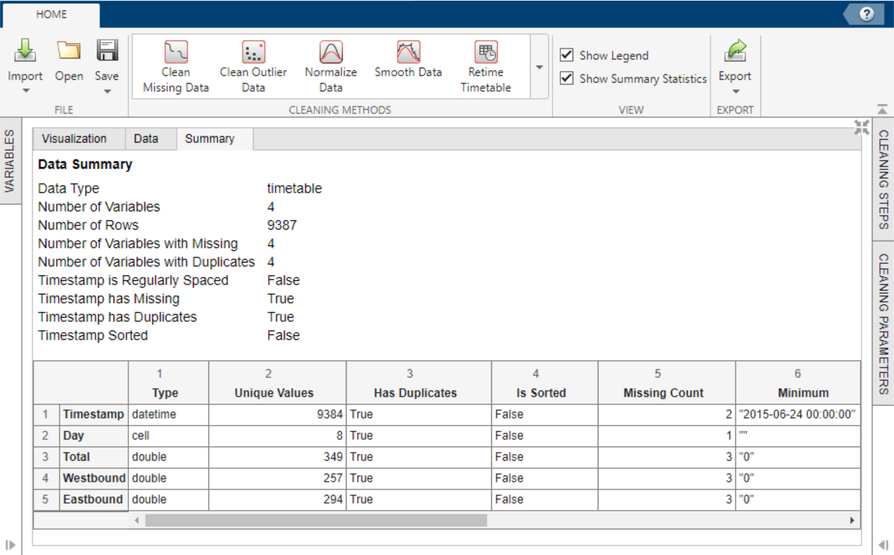

Data Cleaner
Description
The Data Cleaner app is an interactive tool for identifying messy column-oriented data, cleaning multiple variables of data at a time, and iterating on and refining the cleaning process.
Using this app, you can:
Access column-oriented data in the MATLAB® workspace or import column-oriented data from a file.
Explore data by using the visualization, data, and summary views.
Sort by a variable, rename a variable, or remove a variable.
Retime data in a timetable, stack or unstack table variables, clean missing data, clean outlier data, smooth data, or normalize data.
Edit previously performed cleaning steps.
Export cleaned data to the MATLAB workspace, or export code for data cleaning as a script or function.
For more information about cleaning data, watch How to Clean Your Data in MATLAB (5 min, 28 sec).
The Data Cleaner app currently supports cleaning only table and timetable data.
The Data Cleaner app currently supports cleaning only one table or timetable at a time.
Open the Data Cleaner App
MATLAB Toolstrip: On the Apps tab, under MATLAB, click the app icon.
MATLAB command prompt: Enter
dataCleaner.
Examples
Use the Data Cleaner app to preprocess and organize messy timetable data by removing a variable and retiming, smoothing, and normalizing the data. Then, export the cleaned data to the MATLAB workspace. You can follow these steps to preprocess and organize messy timetable data, but note that your data may require a different set of cleaning steps.
This example shows how to preprocess and organize time-stamped bicycle traffic data. The data set comes from sensors on Broadway Street in Cambridge, MA. The City of Cambridge provides public access to the full data set at the Cambridge Open Data site.
Open Timetable in Data Cleaner App
Use the MATLAB Toolstrip or the MATLAB command window to open the Data Cleaner app.
Load the time-stamped bicycle traffic data by using
bikeData = readtimetable("BicycleCounts.csv")in the command window. Then, select Import > Import from Workspace in the Data Cleaner app, and specify the timetablebikeData. Alternatively, import the data by selecting Import > Import from File in the Data Cleaner app.Once the timetable is loaded into the app, view the raw data in the Data tab and a data summary in the Summary tab.

Explore the timetable data in the Visualization tab. Select the
Total,Westbound, andEastboundtimetable variables in the Variables panel.The plots suggest that there is a correlation between time of the year and bike traffic.
Remove Variable from Timetable
The
Dayvariable contains redundant data because the day of data collection is reflected in the timestamp. Interactively removeDayfrom the timetable by using the Variables panel. To remove the variable, right-clickDayand select Delete. Variable removal now appears as a step in the Cleaning Steps panel.Retime Timetable
The data summary shows missing and duplicate timestamp values in the timetable. To sort the timetable and establish unique row times, click Retime Timetable in the Cleaning Methods section of the Home tab of the app. Specify
Unique row times of inputas the selection method and use theSummethod to aggregate. Accept the cleaning parameters to add the cleaning step and update the timetable.After accepting the retiming parameters, the updated data summary shows that there are no missing or duplicate timestamp values and that the timestamps are sorted from earliest to latest.
If retiming is not necessary for your timetable, you can interactively sort by
Timestampor another timetable variable. Access the sorting options by clicking the arrow in the variable header in the Data tab.Smooth Data
Because the bicycle traffic spikes for certain days of each week, smoothing can lessen the noise within each week and give better insight into the bicycle traffic trend throughout the year. To smooth the data, use the Smooth Data cleaning method. Select the
Moving meansmoothing method and specify a centered 7-day window for smoothing. Accept the cleaning parameters to add the cleaning step and update the timetable.Normalize Data
Because the three numeric variables
Total,Westbound, andEastboundhave different scales, use normalization to scale by standard deviation. To normalize the data, use the Normalize Data cleaning method. SelectScaleas the normalization method andStandard deviationas the scale type.To more clearly preview this cleaning step, clear the original data in the legend of the visualizations. Accept the cleaning parameters to add the cleaning step and update the timetable.
Export Timetable
Export the cleaned timetable to the MATLAB workspace by selecting Export > Export to Workspace.
Alternatively, export timetable cleaning code by selecting Export > Generate Script or Export > Generate Function.
Parameters
Clean Missing Data
Select one of these values to specify the missing-value indicators.
| Indicators | Indicator Parameters | Description |
|---|---|---|
Use only standard indicators | Not applicable | Use only standard indicators to detect missing values. Standard missing values depend on the data type:
|
Specify non-standard indicators | Indicators | Inside single quotes, list non-standard indicator values to treat as missing, separated by commas. For example, '–99, "N/A" ' |
Select one of these method values and, if necessary, additional method parameters to specify how to handle missing data.
| Method | Method Parameters | Description |
|---|---|---|
Fill missing | Max gap to fill | Fill missing values. Gaps in data larger than this specified value are not
filled (positive scalar). See the Fill method
parameter. |
Units | Fill missing values. Specify the gap size unit type. | |
Remove missing | Not applicable | Remove data rows with missing entries. |
Select one of these method values and, if necessary, additional method parameters to specify how to fill missing data.
| Method | Method Parameters | Description |
|---|---|---|
Constant value | Constant value | Use a constant scalar value. |
Previous value | Not applicable | Use the previous nonmissing value. |
Next value | Not applicable | Use the next nonmissing value. |
Nearest value | Not applicable | Use the nearest nonmissing value as defined by the x-axis. |
Linear interpolation | Not applicable | Use the linear interpolation of neighboring, nonmissing values. |
Spline interpolation | Not applicable | Use the piecewise cubic spline interpolation. |
Shape-preserving cubic interpolation
(PCHIP) | Not applicable | Use the shape-preserving piecewise cubic spline interpolation. |
Modified Akima cubic interpolation | Not applicable | Use the modified Akima cubic Hermite interpolation. |
Moving median | Moving window type | Center or asymmetrically align the moving window about the current element. |
Window length | Specify the length of the moving window (positive scalar). | |
Right half window length (if moving window type is
Asymmetric) | Specify the number of window units after the current element to define the window alignment (positive scalar). | |
Units | Specify the moving window unit type. | |
Moving mean | Moving window type | Center or asymmetrically align the moving window about the current element. |
Window length | Specify the length of the moving window (positive scalar). | |
Right half window length (if moving window type is
Asymmetric) | Specify the number of window units after the current element to define the window alignment (positive scalar). | |
Units | Specify the moving window unit type. | |
K-nearest neighbors | Num neighbor rows | Specify the number of nearest neighbors (k) to average
for the fill value. |
Distance function | Define the distance between rows of data as the Euclidean distance or the scaled Euclidean distance. |
Clean Outlier Data
Select one of these method values to specify how to handle outlier data.
| Method | Description |
|---|---|
Fill outliers | Fill outlier values. See the Fill method
parameter. |
Remove outliers | Remove data rows with outlier values. |
Select one of these method values to specify the fill method for replacing outlier data.
| Method | Description |
|---|---|
Constant value | Use the specified constant scalar value. |
Center value | Use the center value determined by the find
method. |
Clip to threshold value | Use the lower threshold value for elements less than the lower threshold
determined by the find method. Use the upper threshold value
for elements greater than the upper threshold determined by the
find method. |
Previous value | Use the previous nonoutlier value. |
Next value | Use the next nonoutlier value. |
Nearest value | Use the nearest nonoutlier value. |
Linear interpolation | Use the linear interpolation of neighboring, nonoutlier values. |
Spline interpolation | Use the piecewise cubic spline interpolation. |
Shape-preserving cubic interpolation
(PCHIP) | Use the shape-preserving piecewise cubic spline interpolation. |
Modified Akima cubic interpolation | Use the modified Akima cubic Hermite interpolation. |
Select one of these method values and additional method parameters to specify the detection method for identifying outlier data.
| Method | Method Parameters | Description |
|---|---|---|
Median | Threshold factor | Define outliers as elements more than the specified threshold of scaled
median absolute deviations (MAD) from the median. For input data
A, the scaled MAD is defined as
c*median(abs(A-median(A))), where
c=-1/(sqrt(2)*erfcinv(3/2)). |
Mean | Threshold factor | Define outliers as elements more than the specified threshold of standard
deviations from the mean. This method is faster but less robust than
Median. |
Quartiles | Threshold factor | Define outliers as elements more than the specified threshold of interquartile ranges above the upper quartile (75 percent) or below the lower quartile (25 percent). This method is useful when the input data is not normally distributed. |
Grubbs | Threshold factor | Detect outliers using Grubbs’ test, which removes one outlier per iteration based on hypothesis testing. This method assumes that the input data is normally distributed. |
Generalized extreme studentized deviate
(GESD) | Threshold factor | Detect outliers using the generalized extreme studentized deviate test for
outliers. This iterative method is similar to Grubbs
but can perform better when multiple outliers are masking each other. |
Moving median | Threshold factor | Define outliers as elements more than the specified threshold of local scaled MAD from the local median over a specified window. |
Moving window type | Center or asymmetrically align the moving window about the current element. | |
Window length | Specify the length of the moving window (positive scalar). | |
Right half window length (if moving window type is
Asymmetric) | Specify the number of window units after the current element to define the window alignment (positive scalar). | |
Units | Specify the moving window unit type. | |
Moving mean | Threshold factor | Define outliers as elements more than the specified threshold of local standard deviations from the local mean over a specified window. |
Moving window type | Center or asymmetrically align the moving window about the current element. | |
Window length | Specify the length of the moving window (positive scalar). | |
Right half window length (if moving window type is
Asymmetric) | Specify the number of window units after the current element to define the window alignment (positive scalar). | |
Units | Specify the moving window unit type. | |
Percentiles | Lower threshold | Define outliers as elements with values less than the lower percentile threshold. |
Upper threshold | Define outliers as elements with values greater than the upper percentile threshold. | |
| Lower threshold | Define outliers as elements with values less than the lower threshold. |
Upper threshold | Define outliers as elements with values greater than the upper threshold. |
Normalize Data
Select one of these method values and, if necessary, additional method parameters to specify the method for normalizing data.
| Method | Method Parameters | Description |
|---|---|---|
Z-score | Z-score type | Center and scale to have mean 0 and standard deviation 1 by
specifying Center
and scale to have median of 0 and median
absolute deviation 1 by specifying |
Norm | P-Norm | Scale data by p-norm (positive scalar or Inf
for infinity norm). |
Range | Left limit | Rescale
range of data with left and right range limits to an interval of the form
[a b], where a < b. |
Right limit | Rescale
range of data with left and right range limits to an interval of the form
[a b], where a < b. | |
Median IQR | Not applicable | Center and scale data to have median 0 and interquartile range 1. |
Center | Center Type | Center to have mean 0 by subtracting the mean from the input data
with Center to have median 0 by
subtracting the median from the input data with
Shift center by the specified
numeric value with |
Scale | Scale type | Scale data by standard deviation with Scale data by median
absolute deviation with Scale data by the first element of the
data with Scale data by
interquartile range with Scale data by dividing by the specified
numeric factor (positive scalar) with |
Center and scale | Center Type | Center to have mean 0 by subtracting the mean from the input data
with Center to have median 0 by
subtracting the median from the input data with
Shift center by the specified
numeric value with |
Scale type | Scale data by standard deviation with Scale data by median
absolute deviation with Scale data by the first element of the
data with Scale data by
interquartile range with Scale data by dividing by the specified
numeric factor (positive scalar) with |
Smooth Data
Select one of these method values to specify the smoothing method for noisy data.
| Method | Description |
|---|---|
Moving mean | Use the moving average. This method is useful for reducing periodic trends in data. |
Moving median | Use the moving median. This method is useful for reducing periodic trends in data when outliers are present. |
Gaussian filter | Use the Gaussian-weighted moving average. |
Local linear regression (Lowess) | Use linear regression. This method can be computationally expensive, but it results in fewer discontinuities. |
Local quadratic regression (Loess) | Use quadratic regression. This method is slightly more computationally expensive than local linear regression. |
Robust Lowess | Use robust linear regression. This method is a more computationally expensive version of local linear regression, but it is more robust to outliers. |
Robust Loess | Use robust quadratic regression. This method is a more computationally expensive version of local quadratic regression, but it is more robust to outliers. |
Savitzky-Golay polynomial filter | Use the Savitzky-Golay polynomial filter, which smooths according to a specified polynomial degree and is fitted over each window. This method can be more effective than other methods when the data varies rapidly. |
Select one of these parameter values and additional parameter options to specify the options for data smoothing.
| Parameter | Parameter Options | Description |
|---|---|---|
Smoothing factor | Smoothing factor | Specify the amount of smoothing (positive scalar). |
Moving window | Moving window type | Center or asymmetrically align the moving window about the current element. |
Window length | Specify the length of the moving window (positive scalar). | |
Right half window length (if moving window type is
Asymmetric) | Specify the number of window units after the current element to define the window alignment (positive scalar). | |
Units | Specify the moving window unit type. |
Retime Timetable
Select one of these method values and additional method parameters to specify the selection method for retimed row times.
| Method | Method Parameters | Description |
|---|---|---|
Time step | Time step | Specify the length of time between consecutive regularly spaced row times in the output table (positive scalar). |
Time step units | Specify the time step units. | |
Sample rate | Sample rate | Specify the number of samples in the output table per unit of time (positive scalar). |
Sample rate units | Specify the sample rate units. |
Select one of these method values to specify the retiming method.
| Method | Description |
|---|---|
Fill with missing | Use the missing data indicators (for example, NaN for
numeric variables). |
Fill with constant | Use the specified constant value. The default value is 0. |
Fill with previous value | Copy data from the nearest preceding neighbor in the input timetable, proceeding from the end of the vector of row times. If there are duplicate row times, then use the last of the duplicates. |
Fill with next value | Copy data from the nearest following neighbor in the input timetable, proceeding from the beginning of the vector of row times. If there are duplicate row times, then use the first of the duplicates. |
Fill with nearest value | Copy data from the nearest neighbor in the input timetable. |
Linear interpolation | Use linear interpolation. |
Spline interpolation | Use piecewise cubic spline interpolation. |
Shape-preserving cubic interpolation
(PCHIP) | Use shape-preserving piecewise cubic interpolation. |
Modified Akima cubic interpolation | Use modified Akima cubic Hermite interpolation. |
Sum | Use the sum of the values in each time bin. |
Mean | Use the mean of the values in each time bin. |
Product | Use the product of the values in each time bin. |
Minimum | Use the minimum of the values in each time bin. |
Maximum | Use the maximum of the values in each time bin. |
Number of values | Use the number of values in each time bin. |
First value in bin | Use the first value in each time bin. |
Last value in bin | Use the last value in each time bin. |
Custom | Use the function specified by the function handle. |
Stack Table Variables
Select one or more table variables to combine.
Unstack Table Variables
Select a table variable containing the names of the new table variables.
Select a table variable to unstack into multiple table variables.
Select one or more table variables to define groups of rows.
Select one of these values to specify the function to aggregate data values into a single value.
| Function | Description |
|---|---|
Sum | Use sum of each group of values. |
Mean | Use the mean of each group of values. |
Median | Use the median of each group of values. |
Mode | Use the mode of each group of values. |
Maximum | Use the maximum of each group of values. |
Minimum | Use the minimum of each group of values. |
First | Use the first value of each group of values. |
Unique | Use the number of unique values in each group of values. |
Count | Use the number of values in each group of values. |
Custom | Use the function specified by the function handle. |
Tips
To interactively sort by a data variable, access the sorting options by clicking the arrow in the variable header in the Data tab. The sorting appears as a step in the Cleaning Steps panel.
To interactively rename a variable from the data, double-click the variable name in the Variables panel. The renaming appears as a step in the Cleaning Steps panel.
To interactively remove a variable from the data, right-click the variable name in the Variables panel and select Delete. The removal appears as a step in the Cleaning Steps panel.
To alter previously performed cleaning steps, perform one of these actions:
View or edit cleaning parameters by clicking a step in the Cleaning Steps panel.
Change the order in which cleaning steps are performed by dragging a step to a new location in the Cleaning Steps panel.
Disable cleaning steps by clearing a cleaning step or right-clicking a step and selecting Disable Steps Below in the Cleaning Steps panel.
To view only the input data or cleaned data, select or clear elements in the plot legends in the Visualizations tab.
Version History
Introduced in R2022aFor the Clean Outlier Data cleaning method, define outliers as
elements outside of a range specified by an upper and lower threshold by selecting the
Range detection method.
Fill missing entries with the mean of nearby points by using the K-nearest
neighbors fill method for the Clean Missing Data
cleaning method. Specify the number of neighbors, and define the distance between rows as
the Euclidean distance or the scaled Euclidean distance.
Save Data Cleaner app session as a binary MAT-file containing the data and cleaning steps. To save the session file, in the File section of the Home tab, select Save.
Import and clean data in a table from the MATLAB workspace or from a file. Previously, you could clean only timetable data.
The Data view displays sparklines and summary statistics to quickly visualize and interpret the data in each table or timetable variable. Show more information related to specific points by pointing to a sparkline.